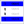
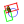
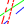
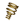
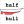

|
| Argomento |
|---|
| Macro |
| Livello di difficoltà |
| Base |
| Tempo di esecuzione |
| Autore |
| Versione di FreeCAD |
| File di esempio |
Contents
|
Questa pagina contiene un elenco di macro con cui aggiungere delle funzionalità alla propria installazione di FreeCAD.
Macros
 Operazioni di visualizzazione 3D
Operazioni di visualizzazione 3D

-
 Ruota la vista di 90°: Ruota la visualizzazione corrente di 90° verso sinistra. Funziona solo se si è in vista dall'alto.
Ruota la vista di 90°: Ruota la visualizzazione corrente di 90° verso sinistra. Funziona solo se si è in vista dall'alto. - Rotazione della vista: Fornisce una interfaccia grafica per consentire la rotazione della vista di quantità precise in tutte e tre le direzioni.
- Campitura di oggetti: Permette di sovrapporre temporaneamente una immagine di texture sugli oggetti selezionati.
- Mouse di precisione: Converte il puntatore del mouse in un puntatore di precisione a forma di croce.
- Allinea la vista alla faccia: Allinea la vista corrente a una faccia selezionata
- Allinea l'oggetto alla vista: Allinea l'oggetto selezionato alla vista corrente e imposta le coordinate di posizionamento della telecamera.
- Allinea la faccia dell'oggetto alla vista: Allinea la faccia dell'oggetto selezionato alla Vista corrente (nel caso di un foro la faccia del foro viene rivolta verso la Vista).
- Macro Allinea la camera al piano di lavoro: Questa macro allinea la fotocamera al corrente Piano di lavoro di Draft
- Macro Allinea il piano di lavoro alla camera: Questa macro sposta il corrente Piano di lavoro di Draft al centro della vista corrente
- Vista pannelli: Commuta la visibilità dai vari punti di vista supportati in FreeCAD, permettendo di visualizzare la finestra principale in tutto lo spazio disponibile sullo schermo.
-
 Posizione camera: Questa macro può ruotare lo schermo di un determinato angolo, lungo un dato asse e crea un piano frontale allo schermo per creare una forma in un piano rivolto verso lo schermo nella posizione specificata, rilevando la posizione della fotocamera .
Posizione camera: Questa macro può ruotare lo schermo di un determinato angolo, lungo un dato asse e crea un piano frontale allo schermo per creare una forma in un piano rivolto verso lo schermo nella posizione specificata, rilevando la posizione della fotocamera . -
 Visibilità oggetti: Gruppo di tre macro, la macro 1: nasconde gli oggetti non selezionati, la macro 2: visualizza tutti gli oggetti, la macro 3: nasconde tutti gli oggetti.
Visibilità oggetti: Gruppo di tre macro, la macro 1: nasconde gli oggetti non selezionati, la macro 2: visualizza tutti gli oggetti, la macro 3: nasconde tutti gli oggetti. -
 Macro Toggle Visibility2: Set of two macro, macro 1: hidden the objects not selected, macro 2: displayed alls objects, macro with the original visibility.
Macro Toggle Visibility2: Set of two macro, macro 1: hidden the objects not selected, macro 2: displayed alls objects, macro with the original visibility. -  Seleziona oggetti visibili: Seleziona tutti gli oggetti visibili nella struttura.
- Stile di navigazione: Coppia di macro che consentono di modificare lo stile di navigazione mentre si lavora nello Sketcher.
- Duplica selezione: Testa se una selezione è duplicabile. Selezionare gli oggetti nella vista 3D, se una selezione è duplicabile il mouse rimane bloccato su "ForbiddenCursor" fino a duplicazione avvenuta.
-
 Copia la vista 3D negli appunti: Copia negli appunti il contenuto della vista 3D ridimensionata a 640, 480 px.
Copia la vista 3D negli appunti: Copia negli appunti il contenuto della vista 3D ridimensionata a 640, 480 px. -
 Perpendicolare a linea: Posiziona l'oggetto perpendicolarmente alla linea selezionata.
Perpendicolare a linea: Posiziona l'oggetto perpendicolarmente alla linea selezionata. -
 Macro Rotate To Point: Questa macro premete la rotazione del obbietto su se stesso, il centro del asso può essere il boundBox centrale, il centro della massa o l'ultimo punto del clic mouse
Macro Rotate To Point: Questa macro premete la rotazione del obbietto su se stesso, il centro del asso può essere il boundBox centrale, il centro della massa o l'ultimo punto del clic mouse -
 Macro FCTreeView: Macro for list all objects in the project in one list without hierarchy, options sort by name, label, visibility, group, by length option search by name, label .... without case sensitive or with case sensitive and select all objects displayed in the macro window.
Macro FCTreeView: Macro for list all objects in the project in one list without hierarchy, options sort by name, label, visibility, group, by length option search by name, label .... without case sensitive or with case sensitive and select all objects displayed in the macro window. -
 Macro Select Hovering: this macro select a choice Face, Edge, Vertex hovering by the mouse.
Macro Select Hovering: this macro select a choice Face, Edge, Vertex hovering by the mouse. -
 Macro ExpandTreeItem: questa macro espande gli elementi selezionati nella vista ad albero. Se non ci sono voci selezionate, espande o comprime tutti gli elementi.
Macro ExpandTreeItem: questa macro espande gli elementi selezionati nella vista ad albero. Se non ci sono voci selezionate, espande o comprime tutti gli elementi.
 Animazioni
Animazioni

- Biella manovella: Simula la rotazione di una biella e un pistone
- Molla: Simula il movimento di una molla
- Cerniera: Simula l'apertura e la chiusura di una cerniera
- Assemblaggio: Animazione di assemblaggio
- Vincoli: Animazione dei vincoli di angolo in Sketcher
- Stampante 3D: Simula il movimento di una stampante 3D
- Animazione disegni: Semplice esempio di animazione di un disegno utilizzando le espressioni Per associare molti contorni e simulare o verificare il movimento. In questo caso la rotazione di un cerchio crea il movimento di tutti gli oggetti collegati.
- Macro Rubik Cube: Display a Rubik Cube and interactively do slice rotations.
- Macro Rubik Cube: Display a Rubik Cube and interactively do slice rotations.
 Codice e Script
Codice e Script

- Finestra di messaggi: Mostra come fornire informazioni all'utente attraverso l'interfaccia utente grafica GUI.
- Python Assistant Window: Permette di tagliare/copiare/incollare del codice Python, è segmentata così possono essere selezionate delle sezioni diverse ed è persistente tra sessioni di FreeCAD.
-
 Build Utility: Fornisce utility per assemblare un progetto da file di sub-progetto utilizzando la funzione Merge Project.
Build Utility: Fornisce utility per assemblare un progetto da file di sub-progetto utilizzando la funzione Merge Project. -
 Global Variable Watcher: Facilita la selezione delle variabili globali e il monitoraggio dei loro valori.
Global Variable Watcher: Facilita la selezione delle variabili globali e il monitoraggio dei loro valori.
 Conversione
Conversione

- Wire da Mesh: Estrae dei bordi wire dai mesh selezionati
- Da Mesh a Part: Converte gli oggetti Mesh selezionati in oggetti Parte.
- Da Part a VRML: Converte le parti selezionate in mesh VRML per avere un file di piccole dimensioni caricabile velocemente (compatibile con i modelli VRML di Kicad e Blender)
- Da Faccia a Schizzo: Converte la faccia selezionata in uno schizzo senza vincoli.
-  Da Wire a Volume: Crea operazioni booleane con gli oggetti selezionati. Basta selezionare i contorni, assegnare lo spessore e cliccare su "Create"
-
 Macro DeepCopy: Crea un composto di una parte con una copia di tutte le sue forme.
Macro DeepCopy: Crea un composto di una parte con una copia di tutte le sue forme.
Foglio di disegno
- Proiezioni automatiche: Consente all'utente di ottenere la visualizzazione di un oggetto in un disegno in 4 diverse posizioni (frontale, superiore, da destra e iso). Necessita di qualche modifica per essere perfettamente efficace.
- Cartiglio: Questa macro con GUI serve per compilare in modo semplice tutti i campi della tabella del foglio da disegno di FreeCAD, il formato della data e il simbolo del modo di proiezione si adattano sia al sistema UE che US.
- Cartiglio completo: Per compilare tramite GUI tutti i campi del cartiglio dei modelli vari completi di FreeCAD, il formato della data e il simbolo della modalità di proiezione si adattano alla regione selezionata, EU o US.
- Cartiglio 2: (Full field edition for this Modelli misti) Per compilare tramite GUI tutti i campi del cartiglio del modello 2 di FreeCAD.
- Vettore normale: Fornisce il vettore normale a una faccia prescelta per consentire di creare una vista di disegno perpendicolare a tale faccia.
 Dxf 2D Draft
Dxf 2D Draft

- Rectellipse: Crea un contorno a forma di rectellipse, ellisse rettangolare o rettangolo arrotondato, parametrico.
- Cerchio da 3 punti: Crea un cerchio su 3 punti selezionati, i punti possono anche essere oggetti (questa macro unisce le due macro riportate in seguito), tutti i parametri si impostano in modo semplice tramite una finestra grafica.
- Cerchio da 3 punti 2D: Crea un cerchio passante per 3 punti selezionati in un piano 2D, i punti possono anche essere degli oggetti.
- Cerchio da 3 punti 3D: Crea un cerchio passante per 3 punti selezionati nello spazio 3D.
-
 Arco da 3 punti: Crea un arco da 3 punti selezionati.
Arco da 3 punti: Crea un arco da 3 punti selezionati. - Ellisse da centro e 2 punti: Costruisce un ellisse selezionando tre punti nell'ordine: centro, raggio maggiore e raggio minore
-  Converti linee: Converte la linea dell'oggetto, da continua a tratteggiata, a tratto e punto, o tratto punto punto, assegnandole le dimensioni indicate.
- Da Segmento a Arco: Sostituisce, se possibile, i segmenti selezionati con un arco di cerchio. Utile per ripristinare gli archi discretizzati.
- Facce da DXF: Crea delle facce dai file DXF, i "Layer" sono riconosciuti singolarmente e inseriti in un gruppi distinti.
- Facce e Schizzi da DXF: Converte gli elementi selezionati in un DXF importato in facce e schizzi.
-
 Composto Plus : Utility che riunisce numerosi comandi di Draft per lavorare con gli oggetti 2D. Ad esempio, lavorare con gli oggetti dei file DXF.
Composto Plus : Utility che riunisce numerosi comandi di Draft per lavorare con gli oggetti 2D. Ad esempio, lavorare con gli oggetti dei file DXF. -
 Forma da DXF : Utilità per unire diverse polilinee in una sola, si possono usare MakeWire, Bspline, BsplineCurve, BsplineCurve + Arc, Polygon e curve di Bezier
Forma da DXF : Utilità per unire diverse polilinee in una sola, si possono usare MakeWire, Bspline, BsplineCurve, BsplineCurve + Arc, Polygon e curve di Bezier
 Fem
Fem

- Mesh con GMSH: Crea Mesh FEM con il generatore di Mesh GMSH
 Informazioni e misure
Informazioni e misure

-
 Info in scheda: Fornisce una serie di informazioni sulla forma selezionata e può convertire lunghezza, angoli (gradi, radianti, gradi centesimali), superficie, volume, peso e densità della forma selezionata sia nelle unità del Sistema Internazionale che in quelle del Sistema Anglosassone.
Info in scheda: Fornisce una serie di informazioni sulla forma selezionata e può convertire lunghezza, angoli (gradi, radianti, gradi centesimali), superficie, volume, peso e densità della forma selezionata sia nelle unità del Sistema Internazionale che in quelle del Sistema Anglosassone. - Info per Linux: come la precedente, ma per Linux
-
 Info trasparenti: Fornisce una serie di informazioni sulla forma selezionata e le visualizza nella schermata 3D
Info trasparenti: Fornisce una serie di informazioni sulla forma selezionata e le visualizza nella schermata 3D - Info dal mouse: Fornisce in tempo reale informazioni sulle coordinate, lunghezza e angoli del mouse in una bolla di annotazione visualizzata nella schermata 3D
- Delta xyz: Dà il valore Delta xyz e la distanza tra 2 punti.
- Info oggetto: Un semplice modulo "Info" creato da un utente di FreeCAD
-
 Elenco oggetti: Genera un elenco di tutti gli oggetti del documento corrente. L'elenco può essere mostrato nella finestra Report o in una finestra indipendente.
Elenco oggetti: Genera un elenco di tutti gli oggetti del documento corrente. L'elenco può essere mostrato nella finestra Report o in una finestra indipendente. -
 Misura cerchio: Calcola il raggio di un cerchio da 3 punti o da uno spigolo circolare.
Misura cerchio: Calcola il raggio di un cerchio da 3 punti o da uno spigolo circolare.
Libreria
- Viti e bulloni: Questa macro crea viti e bulloni, con o senza la filettatura, secondo le norme ISO (screw_maker1_6.py.zip with Pyside support). (Screw Maker 2.0 - nuova versione!)
-
 BOLTS: L'obiettivo di BOLTS è quello di costruire una libreria gratuita e open-source di parti standard per le applicazioni CAD.
BOLTS: L'obiettivo di BOLTS è quello di costruire una libreria gratuita e open-source di parti standard per le applicazioni CAD. - Libreria di parti: Avvia il browser per esplorare la libreria delle Parti
Funzioni matematiche
- Curva parametrica 3D: Disegna una funzione descritta dalle equazioni parametriche x(t), y(t) e z(t).
- Funzione 2D: Disegna una funzione definita da un'equazione z=F(x)
- Funzione parametrica 2D: Basata sulla macro precedente, ma per le equazioni parametriche e eventualmente polari.
- Macro WorkFeatures: Per accedere alle funzione matematiche fatte : Tab > Wire > Curves And Surfaces Launch Curves and Surfaces Menu ...
equations.
 Multifunzione
Multifunzione

- WorkFeatures: Gruppo di strumenti per creare i piani degli assi, i piani da 3 punti, gli assi su una forma, per ottenere informazioni sulle coordinate della forma e molte altre funzioni che facilitano la creazione del progetto. Questi strumenti sono mostrati in una scheda della Vista combinata.
 Creare oggetti
Creare oggetti

- Crea cubo: Crea un parallelepipedo utilizzando 4 punti
- Sweep solido: Crea un solido estrudendo un profilo 2D lungo una traiettoria selezionata precedentemente nella vista 3D. Gli elementi 2D si creano attraverso i normali strumenti GUI di FreeCAD.
- Cupola geodetica: Crea il guscio di una cupola geodetica
- Linea da XYZ: Crea una linea nel piano XY da coordinate XYZ, lunghezza e angolo
- Taglia linea: Taglia una linea e crea tanti punti quanti ne sono richiesti, opzionalmente crea segmenti e/o punti, monocolore o bicolore.
- Macro CirclePlus: Create a circle or arc giving radius, diameter, circumference, area, startangle, endangle, arc, anglecenter, cord, arrow, center (point) on choice (same below but with GUI) plus create sector and face.
- Cerchio: Crea un cerchio o arco dal raggio, diametro, circonferenza, area, startAngle, endAngle, arco, anglecenter, corda, freccia, centro a scelta. Come la precedente, ma senza GUI.
- Taglia cerchio: Taglia un cerchio o un arco e crea tanti archi quanti ne sono richiesti.
- Triangolo AH: Crea un triangolo isoscele dati l'angolo e l'altezza (il vertice è posizionato nel punto 0,0,0)
- Texture:Crea un disegno estratto da un'immagine bmp per produrre facilmente una texture
-
 Loft: Crea un loft con una lista di contorni, è stata creata appositamente per la Macro Texture:
Loft: Crea un loft con una lista di contorni, è stata creata appositamente per la Macro Texture: -
 Testo circolare: Crea un testo intorno un cilindro
Testo circolare: Crea un testo intorno un cilindro - Polilinea da XYZ: Crea una polilinea (spezzata) con le coordinate estratte da un file. Le coordinate X Y Z sono separate da uno spazio.
- Replica componente: Riproduce tutti i sotto-elementi, le facce o i contorni selezionati.
-
 Prisma da apotema: Una GUI che permette di creare un prisma basato sull'apotema del suo poligono base, (inraggio).
Prisma da apotema: Una GUI che permette di creare un prisma basato sull'apotema del suo poligono base, (inraggio). -  Molla a spirale variabile: Crea una molla con i terminali chiusi, si può regolare ogni spira.
- Macro Guitar fretboard: Guitar Fretboard Maker
 Trasformare gli oggetti
Trasformare gli oggetti

- Serie di copie: Copia diverse volte l'oggetto selezionato, secondo una matrice.
- Wire appiattita su piano mediano: Appiattisce una polilinea non planare sulla sua mediana delle coordinate Z.
- Wire appiattita su piano da 3 punti: Appiattisce una polilinea non planare su un piano definito da 3 punti
- Congiunzione di wire: Consente di trovare tutti i bordi non collegati e di congiungerli al bordo non collegato più vicino tramite una linea.
- Rimozione della cronologia: Elimina da un oggetto tutte le associazioni parametriche, lasciandolo come una forma "muta".
- Forza Wire: Forza la creazione di una polilinea partendo da linee e archi non necessariamente contigui. Da utilizzare quando la normale operazione polilinea non riesce.
- Cura gli archi: Talvolta gli archi vengono trasformati in BSpline, per esempio quando ad essi sono applicate operazioni di scala. Questa macro ricrea gli archi dalle BSpline. Utile prima dell'esportazione in .dxf.
-
 Clone convertito: Crea un clone dell'oggetto, convertito nella posizione e nelle dimensioni scelte (inch, mm, m, µm...).
Clone convertito: Crea un clone dell'oggetto, convertito nella posizione e nelle dimensioni scelte (inch, mm, m, µm...). - Scala immagine: Scala disegni, grafici, schemi, modelli e immagini 2D simili nell'ambiente Immagine.
- Trasformazioni: Applica una trasformazioni lineare dello spazio per modificare le forme. Ad esempio, la scalatura non uniforme, l'inclinazione di un testo (shader), la riflessione, l'inversione degli assi.
- Collega con Sweep: Crea una connessione tra due oggetti, un oggetto e un punto o tra due punti. La connessione va da un centro all'altro centro degli oggetti, la sua forma è configurabile, e può essere circolare, poligonale o ellittica.
-
 Sezione: (parametrica): Implementazione alternativa dello strumento Sezione di Parte, più adatto a fare percorsi di sweep.
Sezione: (parametrica): Implementazione alternativa dello strumento Sezione di Parte, più adatto a fare percorsi di sweep. - Sovrapposizione: (parametrica): Operazione booleana. Simile a Part Common, ma con grado di sovrapposizione personalizzato.
 Stampante 3D
Stampante 3D

- Slicer per stampanti 3D: Esporta il progetto corrente verso un software di analisi (slicer) per stampanti 3D o verso un software CAM.
 Raytracing
Raytracing

- Da FreeCAD a Kerkythea: Esporta da FreeCAD a Kerkythea
 Foglio di calcolo
Foglio di calcolo

- Gestione degli Alias: aiuta a gestire gli alias all'interno dell'ambiente Foglio di calcolo di FreeCAD . È in grado di creare, cancellare, spostare gli alias e creare una 'famiglia di parti'.
- Macro Spreadsheet Tools: Questa macro aiuta a gestire le celle all'interno dell'ambiente Spreadsheet di FreeCAD.
- Macro FCTreeView: Macro per elencare tutti gli oggetti del progetto in un elenco senza gerarchia, opzioni di ordinamento per nome, etichetta, visibilità, gruppo, ricerca per lunghezza per nome, etichetta .... senza distinzione tra maiuscole e minuscole o con distinzione tra maiuscole e minuscole e per selezionare tutti gli oggetti visualizzati nella finestra macro.
-
 Macro FCSpreadSheet Extract: Questa macro salva i dati in un file csv con la formula o in un file xml.
Macro FCSpreadSheet Extract: Questa macro salva i dati in un file csv con la formula o in un file xml.
 Utilità
Utilità

{kind=link}
{kind=link}
{kind=link}
{kind=link}
{kind=link}
{kind=link}
{kind=link}
{kind=link}
{kind=link}
{kind=link}
{kind=link}
{kind=link}
{kind=link}
{kind=link}
{kind=link}
{kind=link}
{kind=link}
{kind=link}
{kind=link}
{kind=link}
{kind=link}
{kind=link}
{kind=link}
-
 Centro faccia: Marca con un punto rosso (modificabile) il centro della faccia (massa) e stampa le sue coordinate
Centro faccia: Marca con un punto rosso (modificabile) il centro della faccia (massa) e stampa le sue coordinate -
 Centra facce e bordi: Permette di applicare il vincoli di concentricità tra parti non cilindriche e il vincolo sul centro di facce e bordi. Funziona anche con i nuovi contenitori Body e App::Part, così come con la gerarchia di STEP.
Centra facce e bordi: Permette di applicare il vincoli di concentricità tra parti non cilindriche e il vincolo sul centro di facce e bordi. Funziona anche con i nuovi contenitori Body e App::Part, così come con la gerarchia di STEP. - Aperture: Permette di creare delle aperture nei contenitori in un modo molto pratico.
- Menu delle macro: Aggiunge le macro trovate nella cartella delle macro al menu delle macro di FreeCAD
- Ricalcolo: Forza il ricalcolo manuale del modello.
- Macro Recompute Profiler: Misura il tempo necessario per ricalcolare ogni oggetto in un progetto.
- Scrolla schizzo: Scrolla uno schizzo per scoprire le sue parti non vincolate
-
 Sostituisci Parte in Assembly: Sostituisce una Parte (semplice copia) in un "Assembly" con un'altra Parte Part (semplice copia).
Sostituisci Parte in Assembly: Sostituisce una Parte (semplice copia) in un "Assembly" con un'altra Parte Part (semplice copia). - Stile di disegno: Commuta lo Stile di disegno - DrawStyle - dell'oggetto selezionato.
- Evidenzia parti comuni: Evidenzia le parti comuni tra forme.
-
 Evidenzia differenze: Calcola le differenze tra due forme.
Evidenzia differenze: Calcola le differenze tra due forme. - Sezione dinamica: mostra una sezione trasversale interattiva scorrevole.
- Macro Print_SceneGraph: stampa SceneGraph.
-
 Traccia contenitore: Crea una traccia rossa (modificabile) intorno al BoundingBox con 6 rettangoli
Traccia contenitore: Crea una traccia rossa (modificabile) intorno al BoundingBox con 6 rettangoli - Sistema di assi Arch: Aiuta a creare un sistema di assi lungo una linea.
- Perpendicolare a linea: Posiziona l'oggetto perpendicolarmente alla linea selezionata.
- Unisci i materiali duplicati: Fonde i materiali che hanno lo stesso nome di base (con differenti terminazioni numerali come 001, 002, ...) in uno solo.
- Annulla collegamenti al tastierino numerico: ridefinisce i comandi di visualizzazione standard dai tasti numerici a Ctrl + digit, in modo che non ruotino la vista per errore durante l'immissione dei numeri.
{kind=link}
{kind=link}
{kind=link}
Wizards
{kind=link}
- Dispiega lamiera: Crea una parte dispiegata da un parte in lamiera.
- Sviluppa superfici rigate: Permette di srotolare le superfici rigate e di disegnare lo sviluppo in una pagina.
- Sviluppa solido: Permette di creare e disegnare lo sviluppo di un solido con facce piane.
- Importa e scala un profilo alare: Importa e scala un profilo alare .dat alla lunghezza di corda desiderata.
-
 Croce di Malta: Consente all'utente di creare un meccanismo Croce di Malta da zero. Per modificare la dimensione dell'oggetto è necessario modificare i valori all'interno della Macro.
Croce di Malta: Consente all'utente di creare un meccanismo Croce di Malta da zero. Per modificare la dimensione dell'oggetto è necessario modificare i valori all'interno della Macro. - Geneva Wheel GUI: Una interfaccia grafica che permette all'utente di impostare i valori per creare un meccanismo Croce di Malta da zero.
- Cabinets32: crea le pareti laterali, superiori e di fondo di un armadio con i fori per collegare le parti prodotte da Hettich.
- Scala a mezzo giro: Crea una scala a mezzo giro (sinistra o destra) dai dati di un file.
-  Mezzo scafo: Questa macro, partendo da una serie di disegni 2D, genera un modello tridimensionale sia di "mezzo scafo" half-hull che dello scafo completo.
- Scala a chiocciola: Crea una scala a chiocciola.
-
 Ingranaggi: Ambiente aggiuntivo per creare diversi tipi di ingranaggi, evolventi, cremagliere, ingranaggi cicloidi e conici.
Ingranaggi: Ambiente aggiuntivo per creare diversi tipi di ingranaggi, evolventi, cremagliere, ingranaggi cicloidi e conici. - Angolare: Apre una finestra di dialogo in cui si possono definire le dimensioni di un angolare (profilo a L), quindi crea l'oggetto nel documento e poi crea una pagina (foglio) di disegno con la vista superiore, frontale e laterale del pezzo.
-
 Proprietà Memo: Crea una proprietà aggiuntiva (nominabile a piacere) per gli oggetti, funziona solo in Draft.
Proprietà Memo: Crea una proprietà aggiuntiva (nominabile a piacere) per gli oggetti, funziona solo in Draft.
{kind=link}
{kind=link}
 Altre macro interessanti create dagli utenti di FreeCAD e mantenute al di fuori del wiki.
Altre macro interessanti create dagli utenti di FreeCAD e mantenute al di fuori del wiki.
-
 By microelly2 : freeCAD_macro, geodata, Animation, freecad-nurbs, PieMenu, ..... other
By microelly2 : freeCAD_macro, geodata, Animation, freecad-nurbs, PieMenu, ..... other - By hamish2014: FreeCAD_assembly2, FreeCAD_drawing_dimensioning, ...
- By triplus: IconThemes, ShortCuts, NavigationIndicator, TabBar, Launcher, PersistentToolbars, PieMenu, ....
-
 By rockn: FreeCAD-Timber, FreeCAD-addons, FreeCAD-library, FreeCAD-StructuresBois, .... other
By rockn: FreeCAD-Timber, FreeCAD-addons, FreeCAD-library, FreeCAD-StructuresBois, .... other - By oddtopus: flamingo (workbench for metal structures)
- By dprojects: getDimensions macro FreeCAD per ottenere le dimensioni di taglio per pannelli di truciolato (lavorazione del legno)
- By Siardeni: Strumenti per creare profili quadrati, profili Z, pallet di legno, ruotare, creare foglio di disegno del progetto ...
Come utilizzare le macro

Le macro di cui sopra possono essere facilmente inserite in qualsiasi installazione di FreeCAD:
- A partire da FreeCAD v 0.17, Un nuovo Strumenti -> Addons Manager permette di installare facilmente qualsiasi macro di questa pagina. Se la versione di FreeCAD non ha ancora l'Addons manager si devono seguire le seguenti istruzioni.
- Copiare il codice python della macro dalla pagina della macro corrispondente
- In FreeCAD selezionare Macro-> Macro-> Crea nuova e assegnare un nome
- Incollare il codice python copiato
- Premere il pulsante Salva e riavviare FreeCAD
- Aprire il gestore delle Macro, selezionare la nuova macro e fare clic su "Esegui"
- Tutorial Come installare le Macro
Inoltre, è anche possibile aggiungere la nuova macro a una barra degli strumenti personalizzata
- In FreeCAD, andare in Strumenti -> Personalizza
- Nella scheda Macro, aggiungere una nuova macro, e, volendo, definire un'icona e una scorciatoia da tastiera
- Nella scheda Barre degli strumenti, creare una nuova barra degli strumenti, e aggiungere le macro selezionandole nella categoria "Macro".
- Tutorial Personalizzare la barra degli strumenti
Aggiungere nuove macro a questo repository
- Creare una nuova pagina il cui nome inizi con "Macro", per esempio "Macro_My_Excellent_Macro". Questo si può fare modificando semplicemente la presente pagina, e aggiungendo un nuovo collegamento alla macro, ad esempio:
- esempio :
* {{MacroLink|Text-x-python|Macro My Excellent Macro|Macro My Excellent Macro title}} : My excellent macro description.
- Text-x-python : icona di default (sostituire con il nome della vostra icona, l'icona deve avere lo stesso nome della pagina che descrive la macro. L'icona deve sempre essere .png)
- Macro My Excellent Macro : nome della macro
- Macro My Excellent Macro title : nome della macro o titolo
Viene creata una nuova pagina (link rosso) .
- incollare nella pagina questo testo:
Esempio con icona di default:
{{Macro|Icon=Text-x-python|Name=Macro_My_Excellent_Macro|Description=What my excellent macro does|Author=your username|Version=1.0|Date=YYYY-MM-DD}
Esempio con icona personalizzata:
{{Macro|Icon=Macro_My_Excellent_Macro|Name=Macro_My_Excellent_Macro|Description=What my excellent macro does|Author=your username|Version=1.0|Date=YYYY-MM-DD}}
In altra lingua, con icona di default, ad esempio "/fr" "/de" "/it":
{{Macro/fr|Icon=Text-x-python|Name=Macro_My_Excellent_Macro|Name/fr=Macro_My_Excellent_Macro|Description=
What my excellent macro does|Author=your username|Version=1.0|Date=YYYY-MM-DD}
In altra lingua, con icona personalizzata, ad esempio "/fr" "/de" "/it":
{{Macro/fr|Icon=Macro_My_Excellent_Macro|Name=Macro_My_Excellent_Macro|Name/fr=Macro_My_Excellent_Macro|Description=
What my excellent macro does|Author=your username|Version=1.0|Date=YYYY-MM-DD}}
- Si può anche caricare una icona personalizzata in formato .png
Ricordare che l'icona deve avere lo stesso nome della macro.- esempio : " Macro_My_Excellent_Macro " senza estensione (l'estensione viene fornita dal sistema), e, sostituire " Icon=Text-x-python " con " Icon=Macro_My_Excellent_Macro "
- Text-x-python
 è l'icona di default della pagina dedicata alle Macro.
è l'icona di default della pagina dedicata alle Macro.
- Incollare la macro, e utilizzare Code template per evitare di aggiungere spazi nello script. La macro viene visualizzata in un font a spaziatura fissa all'interno di un riquadro di colore grigio chiaro come nell'esempio precedente.
- Si può caricare un'icona .png con lo stesso nome della macro, per esempio Macro_My_Excellent_Macro.png
- Aggiungere un'immagine: l'immagine è utile per mostrare cosa fa la macro. Opzionalmente è possibile creare una gif animata che rappresenta l'oggetto nel contesto. Creare le Gif Animate con dimensione massima di 500x500px, il sito non accetta il loro ridimensionamento. Le gif animate ridimensionate sono visualizzate come immagini fisse.
- Opzionalmente è possibile aggiungere ancora delle informazioni su come utilizzare la macro, consigli, limitazioni e trucchi.
- È anche interessante includere nella macro le informazioni sulla versione di FreeCAD utilizzata per costruirla. La macro può così essere confrontata con l'evoluzione di FreeCAD. Fare "Menu → Aiuto → About FreeCAD" e poi cliccare su "Copia negli appunti" e incollare le informazioni nella macro
Es:
#OS: Windows Vista #Platform: 32-bit #Version: 0.14.3389 #Python version: 2.6.2 #Qt version: 4.5.2 #Coin version: 3.1.0 #SoQt version: 1.4.1 #OCC version: 6.5.1
Si consiglia inoltre di creare una intestazione nella macro, questa intestazione può essere utilizzata dal programma Plugin Loader per installare le macro e controllare le versioni. È anche disponibile la addons_installer.FCMacro
Es:
__Title__="Title_Of_macro" __Author__ = "User_Name" __Version__ = "00.11" __Date__ = "2015-07-25" __Comment__ = "This is the comment of the macro" __Web__ = "http://forum.freecadweb.org/viewtopic.php?f=3&t=7384" __Wiki__ = "http://www.freecadweb.org/wiki/index.php?title=Macro_Title_Of_macro" __Icon__ = "/usr/lib/freecad/Mod/plugins/icons/Title_Of_macro" __IconW__ = "C:/Documents and Settings/YourUserName/Application Data/FreeCAD" __Help__ = "start the macro and follow the instructions" __Status__ = "stable" __Requires__ = "freecad 0.14.3706" __Communication__ = "http://www.freecadweb.org/wiki/index.php?title=User:User_Name"
Aggiungerla alle categorie di cui sopra, o creare una nuova categoria, se è necessario.